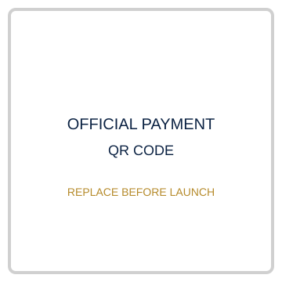

⌕
RESEARCH
Understand the issue and your country's position with depth and integrity.
EDITION 1 · ST. PATRICK MODEL UNITED NATIONS
Two days of diplomacy, debate, negotiation and leadership for school students in Puducherry.
Understand the issue and your country's position with depth and integrity.
Present your position clearly and persuasively in the committee.
Build coalitions and find common ground with diverse perspectives.
Turn competing ideas into recommendations and resolutions the room can support.
ABOUT SPMUN
SPMUN is St. Patrick Higher Secondary School's first Model United Nations. Delegates research a position, defend it under scrutiny, build coalitions with those who disagree and work toward outcomes that can survive a vote. The conference is designed to make disagreement and respect occupy the same room.
Curbing the illicit trafficking of small arms and light weapons.
View committee →Ensuring the right to education for children in conflict-affected regions.
View committee →Adolescent mental health — academic stress, screen dependence and access to counselling.
View committee →Building an Indian Framework for Responsible AI and Deepfake Governance while Safeguarding Freedom of Speech and Democratic Processes.
View committee →AIPPM SPOTLIGHT
AIPPM is a domestic simulation. Delegates represent named individuals and political-party positions, debate with wider parliamentary latitude, and work toward consensus statements or joint recommendations. The handbook stresses party line, constituency, governing record and the point at which a delegate can concede without abandoning the party's position.
Best Delegate, High Commendation, Special Mention and Honourable Mention.
Every delegate receives a participation certificate.
Best Delegate and High Commendation receive cash prizes.
Your preparation matters. Use the handbook and preparation path to arrive confident rather than apprehensive.
Role of a delegate, committee flow and diplomacy.
02Country or portfolio position, evidence and credible sources.
03Build a clear, defensible position before conference day.
04Points, motions, caucuses, working papers and voting.
The complete handbook is included with this website package.
REGISTRATION
Registration closes 20 September 2026. Late registrations will be considered only against unfilled portfolios.
Registration form and payment instructions will be finalized before launch.
Register / Continue →
Replace this placeholder with the official UPI QR.Complete the online registration form.
Review the country/portfolio matrix and submit preferences.
Use the official payment method and retain your transaction reference.
Secretariat verifies payment and sends final committee/portfolio confirmation.
config.js.CONTACT THE SECRETARIAT
St. Patrick Higher Secondary School, Puducherry
Exact street address, landmark and drop-off details to be added.